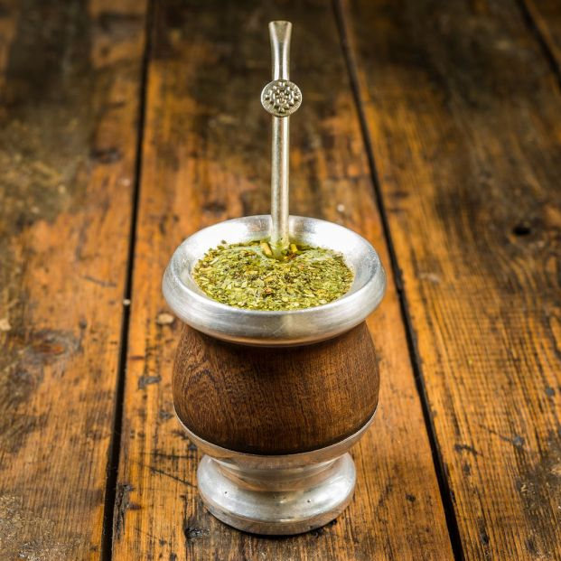

What is Mate?
Is a traditional South American herbal drink. It is also known as chimarrão or cimarrón, it is consumed principally in Argentina, Uruguay, some parts in Chile, south Brazil and Paraguay. The English word comes from the French maté and the American Spanish mate, which means both mate and the vessel for drinking it, from the Quechua word mati for the calabash gourd used to make it. Both the spellings "maté" and "mate" are used in English. The acute accent indicates that the word is pronounced with two syllables, like café (both maté and café are stressed on the first syllable in the UK), rather than like the one-syllable English word "mate".
An acute accent is not used in the Spanish spelling, because the first syllable is stressed. The Yerba Mate Association of the Americas points out that, in Spanish, "maté" with the stress on the second syllable means "I killed". In Brazil, traditionally prepared mate is known as chimarrão, although the word mate and the expression "mate amargo" (bitter mate) are also used in Argentina and Uruguay. The Spanish cimarrón means "rough", "brute", or "barbarian", but is most widely understood to mean "feral", and is used in almost all of Latin America for domesticated animals that have become wild. The word was then used by the people who colonized the region of the Río de la Plata to describe the natives' rough and sour drink, drunk with no other ingredient to sweeten the taste.